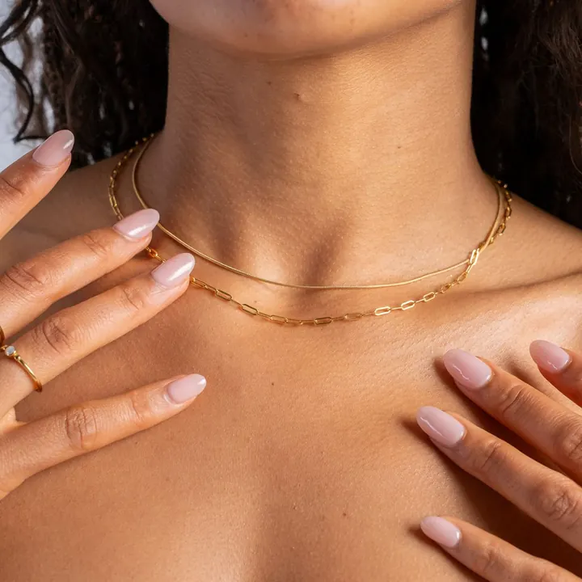

黃金鑑定：從掂重到火試金
黃金鑑定從「掂一下」開始——密度 19.3 的手感，是第一道防線。

核心定義
黃金鑑定的六招：① 掂重量（密度 19.3 壓手）；② 看印記（K 數/純度）；③ 磁鐵測試（金不吸磁）；④ 酸測試（硝酸不溶）；⑤ 電子密度儀（精確測量）；⑥ XRF/火試金（專業定論）。六招由淺入深，覆蓋從快篩到定論。
常見欺詐：鍍金（銅/銀外鍍金層）、包金（薄金包覆）、低 K 冒充高 K——前兩招（掂重＋印記）能擋掉一半，剩下靠酸與儀器。
特徵與分類
| 測試 | 方法 | 可靠度 |
|---|---|---|
| 掂重 | 手感 | 快篩 |
| 印記 | K數標示 | 參考 |
| 磁鐵 | 不吸磁 | 排除鐵基 |
| 硝酸 | 不溶於硝酸 | 高 |
| XRF | 光譜分析 | 定論 |
| 火試金 | 高溫熔煉 | 權威 |
鍍金的破綻：表面金層磨損處露出底材（銅紅/銀白）；密度測量會偏低（金鍍銅的密度明顯不足）。包金（gold-filled）有合法標示（如 1/20 14K GF），但常被當「足金」誤賣。
科學原理
酸測試的原理：金（Au）是貴金屬，不溶於硝酸——銅銀合金遇硝酸反應（冒泡變色）。測試用試金石（黑色石板）劃痕＋硝酸：真金痕跡不變、銅銀痕跡反應。這是數百年的老方法，依然可靠。
火試金（fire assay）是黃金純度的「仲裁者」：高溫熔煉去除雜質，精確稱重算出含金量——它是國際黃金貿易的標準方法。XRF（X射線螢光）則無損檢測表面成分——現代珠寶店的主力儀器。
鑑定與鑑別方法
- 掂重：19.3 密度壓手感
- 看印記與磨損處（鍍金露底）
- 磁鐵：不吸
- 試金石＋硝酸：快篩成色
- XRF：無損定論
- 高價值：火試金
市場行情與保養建議
市場現況：金飾造假以「鍍金、低 K 冒充、非金合金」為主——旅遊區與低價賣場高發。價格異常低於金價（金價＋合理工藝費）就是警訊。
自保三步：算價格（低於金價即警覺）、看印記與檢測（店內 XRF）、留憑證（發票與純度保證）——黃金的鑑定，理性與儀器並行。
常見誤區
純金軟、可咬出牙痕——但鍍鉛/鍍金的軟金屬也咬得動。咬痕測試只證明「軟」，不證明「金」。
銅、銀、白金也不吸磁——「不吸磁」是必要條件，不是充分證明。磁鐵只能排除鐵基假貨。
冷知識
金匠在黑色石英岩板上劃痕、滴硝酸——看痕跡反應判斷成色。幾百年的老方法，至今還在用。
黃金耐硝酸與硫酸，但溶於王水（鹽酸＋硝酸 3:1）——它是少數能溶解黃金的液體。
反直覺觀點
王水能溶金——「永恆的金屬」也有天敵。化學世界沒有絕對的永恆。
火試金需取樣熔煉——它準確，但樣品會消耗。無損的 XRF 是現代替代，但火試金仍是仲裁標準。